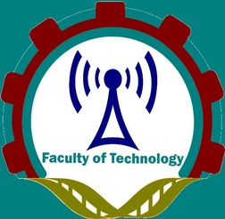

 Faculty of Technology University of Ruhuna
Dr. V.H.P.Vitharana
Department of ET
Senior Lecturer
hashin@etec.ruh.ac.lk
041-2222681 Ext.4510


ACADEMIC AND PROFESSIONAL QUALIFICATIONS
Doctor of Philosophy in Engineering and Technology ,(August 2015 to February 2019)
Research Title: "Development of lower back pain prevention index due to whole body vibration: System Dynamics"
Master of Philosophy in Safety in Construction Engineering (2012 - 2014)
Research Title: "Health Effect of Construction Workers Exposing High Levels of Noise and Vibration"
Bachelor of Science (Special) Physics (2007 - 2011)
Research Title: "Wireless Multiple Choice Question/ Answer Evaluation System for Classrooms"
Lecturer in Physics (May 2019 to up May 2020)
Department of Science and Technology, Faculty of Applied Sciences, Uwa Wellassa University
Temporary Lecturer (December 2018 to April 2019)
Department of Engineering Technology, Faculty of Technology, University of Ruhuna
Subjects: Properties of matter, teaching assistant for Probability and Statistics
Teaching Assistant (September 2016 to July 2018) School of ICT, SIIT Subjects: Object oriented programming languages, data structures and algorithms
Research Assistant (July 2017 to July 2018)
Project: Forecast the photovoltaic installation in the next five years (2018-2023) Electricity Generating Authority of Thailand
Temporary Instructor (November 2014 -July 2015)
Department of Interdisciplinary, Faculty of Engineering, University of Ruhuna
Research Assistant (September 2012 - August 2015)
Department of Civil and Environmental Engineering, Faculty of Engineering, University of Ruhuna
Temporary Demonstrator (February 2012 - August 2012)
Department of Physics, Faculty of Science, University of Ruhuna
PUBLICATIONS
Publications in International Journals
Vitharana, V., & Chinda, T. (2019, March 1). Development of a lower back pain prevention index for heavy equipment operators in the construction industry: system dynamics modelling. International Journal of Construction Management. https://doi.org/10.1080/15623599.2019.1579969
Vitharana, V.H.P. and Chinda, T. (2017). Structural equation modeling of lower back pain due to whole body vibration exposure in the construction industry, Journal of occupational safety and ergonomics, DOI 10.1080/10803548.2017.1366119.
Vitharana, V.H.P., Subashi De Silva, G.H.M.J, Sudhira De Silva. (2015). Health hazards, Risk and Safety practices in construction sites - A Review Study, ENGINEER journal, Vol. 48, pp 35-44.
Publications in National Journals
Vitharana, V.H.P., Subashi De Silva G.H.M.J, Sudhira De Silva. (2015). Noise and Vibration exposure levels of workers in building construction sites, ICTAD journal, Vol.12, pp 74-79.
Publications in International Conferences
Vitharana, V.H.P., Chinda T. (2017). Policy analysis of the budget used in training program for reducing lower back pain among heavy equipment operators in the construction industry: System dynamics approach, IconCEES2017, Langkavi, Malaysia.
Vitharana V.H.P., Chinda T. (2016). Factors Affecting Health Problems among Construction Workers due to Whole Body Vibration (WBV): Literature Review, TIMES-iCON2016, Bangkok, Thailand (Best paper award).
Vitharana V.H.P., Subashi De Silva G.H.M.J, Sudhira De Silva. (2015). Comparing health risks among vehicles operators in construction sites exposed to whole body vibration using EU directive 2002/44/EC and ISO 2631-1, Proceedings of 3rd International symposium on advances in civil and environmental engineering practices for sustainable development (ACEPS-2015), pp.274-278.
Vitharana V.H.P., Subashi De Silva G.H.M.J, Sudhira De Silva. (2014). Method to Assess Comfort Level and Potential Health Risks of Construction Workers, 4th International Conference on sustainable build Environment (ICSBE2014), Kandy, Sri Lanka, December 2014.
Vitharana V.H.P., Subashi De Silva G.H.M.J, Sudhira De Silva. (2014). Whole Body Vibration Exposures of Workers in Construction Sites in Sri Lanka, Proceedings of the 4thAnnual sessions of the Society of Structural Engineers' Sri Lanka (SSE-SL), 24 September 2014.
Vitharana V.H.P., Subashi De Silva G.H.M.J, Sudhira De Silva. (2013). Workers awareness of risk factors and safety practices in construction sites, Proceedings of the 3rd Annual sessions of the Society of Structural Engineers' Sri Lanka (SSE-SL), 23 September 2013, pp.47-52.
Vitharana V.H.P., Subashi De Silva G.H.M.J, Sudhira De Silva. (2013). Risk associated with noise and vibration exposures and their effects on health of workers in Construction sites, 4th International Conference on Structural Engineering and Construction Management (ICSECM), Kandy, Sri Lanka, December 2013.
Vitharana V.H.P., Subashi De Silva G.H.M.J, Sudhira De Silva. (2013). Health Hazards, Risk factors and Safety practices in construction sites - Review Study, Proceedings of International Conference on Advanced Civil Engineering Practices for Sustainable Development (ACEPS-2013), 27 September 2013,pp.52-59.
Publications in National Conferences
Vitharana V.H.P., Subashi De Silva G.H.M.J, Sudhira De Silva. (2014). Noise and Whole Body Vibration exposures of construction workers in Building Construction Sites in Sri Lanka, Proceedings of 1st Annual Research Symposium (ARS-2014), Faculty of Engineering, University of Ruhuna, Sri Lanka, January 2014, pp. 14.
Vitharana V.H.P., Subashi De Silva G.H.M.J, Sudhira De Silva. (2014). Workers Awareness on the Acute and Chronic Effects of Risk Factors in Construction Sites, Proceedings of 11th Academic Sessions of University of Ruhuna, 19 March 2014, pp. Xx.
Vitharana V.H.P., Subashi De Silva G.H.M.J, Sudhira De Silva. (2013). Safety practices among construction workers in Sri Lanka, Proceedings of 10th Academic Sessions of University of Ruhuna, 20 March 2013, pp. 55.
Vitharana V.H.P., Abeywickrama S.S., Dharmarathna W.G.D., Yapa K.K.A.S. (2013). Wireless Multiple Choice Question/ Answer Evaluation System for Classrooms, Proceedings of 9th Ruhuna Science Symposium, 9th January 2013, pp.24.
AWARDS & FELLOWSHIPS
Excellence Foreign Student Scholarship (EFS) 2015 Offered by Thammasat University, Thailand
Best Paper Award Times Icon 2016, Bangkok, Thailand
Transforming University of Ruhuna to International Status 2012 Offered by University of Ruhuna, Sri Lanka
MEMBERSHIPS & ACTIVITIES IN PROFESSIONAL BODIES
RESEARCH INTERESTS
System dynamics modelling
Structural equation modelling
Exploratory factor analysis
Renewable energy
Occupational health and safety
Noise
Whole body vibration exposure